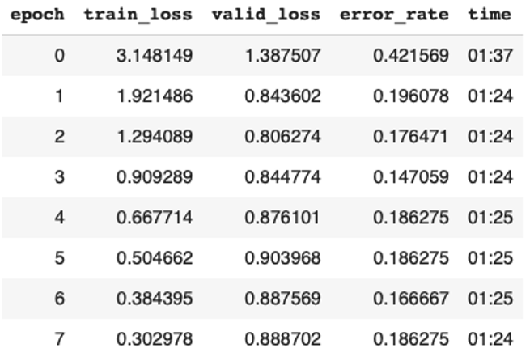
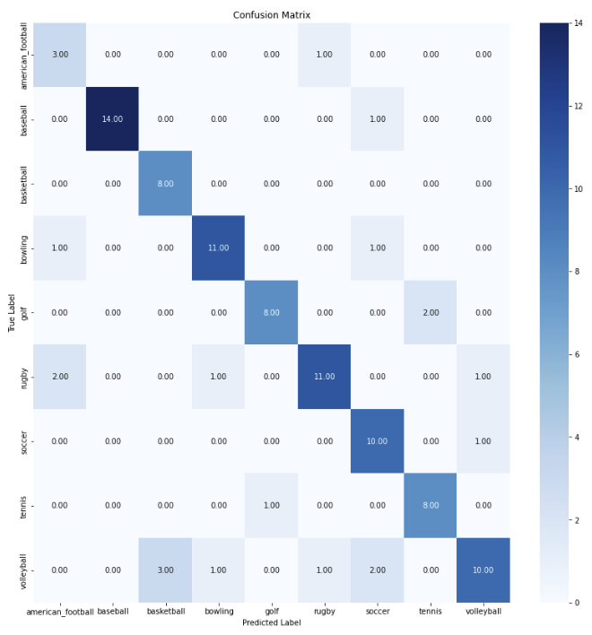
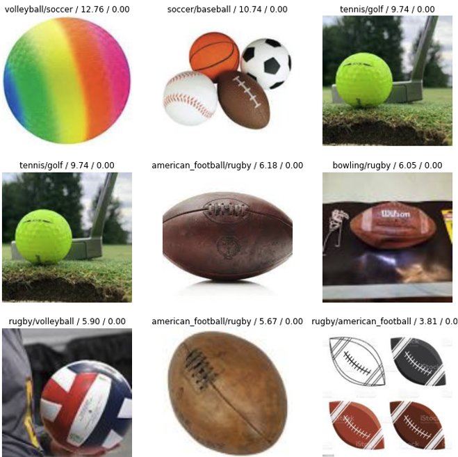
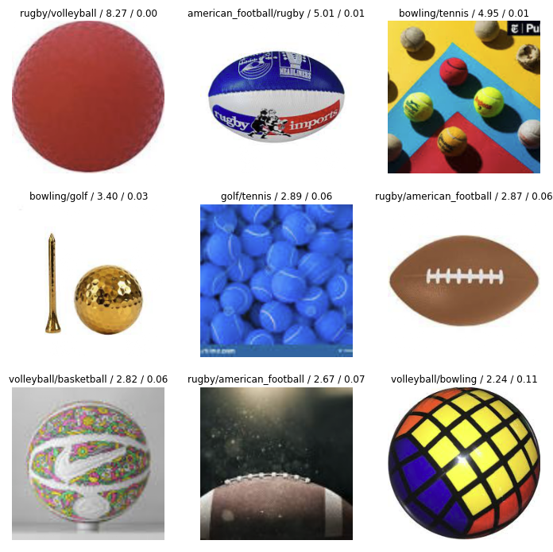

Just like in Machine Learning, certain use cases of Deep Learning come with a standard set of algorithms to be used. In the case of image recognition, Convolutional Neural Networks are the most used algorithms to do the job.
A convolutional neural network (CNN) works by sliding a small matrix called a "filter" over the input image and performing element-wise multiplication and summing to produce a new matrix, which represents a feature map. The process of sliding the filter over the image and generating multiple feature maps is called "convolution". The generated feature maps are then processed by multiple layers, with each layer learning increasingly complex features of the input image. The final output of the CNN is a prediction about the image, based on the learned features. The key advantage of CNNs is that they can learn to automatically identify important features in an image, reducing the need for manual feature engineering.
Two great resources that clarified how CNNs work are the following videos:
• FastAi lesson
• Youtube video
Just like in Machine Learning, the first step before modelling was splitting the dataset into a training set and a testing set, where 80% of the data is used for training and 20% is used for testing. The dataset consists of images and tags, where each image if tagged with a label (football, soccer, tennis, etc.)
Next, a CNN model called Resnet34 was trained on the training data. Restnet34 is a pre-trained model on the ImageNet dataset which contains 100,000+ images across 200 different classes and is very popular for this use case, which is why I decided to use it on my dataset.
The model was trained for 8 epochs using the 1Cycle policy, which adjusts the learning rate over the course of training to improve convergence and stability. An epoch in deep learning refers to a complete iteration through the training dataset. So, when you train a model for 8 epochs, it means that the model is seeing each training example 8 times and updating its parameters each time.
In each epoch, the model takes the training data as input, makes predictions, and then updates its parameters based on the difference between the predictions and the actual labels. The goal is to minimize the error metric (e.g. error rate, accuracy, etc.) over the training dataset so that the model can generalize well to unseen data.
The number of epochs is a hyperparameter that needs to be set before training. In general, the larger the number of epochs, the better the model will perform on the training data. However, at some point increasing the number of epochs will not significantly improve the model performance and may lead to overfitting, where the model is memorizing the training data instead of learning general patterns. Below are the results of the training cycle:

As the table above shows the model ends up having around an 81% accuracy score, which is a very good score considering this is a preliminary model without any hyperparameter tuning and an even better model if we want to compare it to a baseline random model that has an accuracy of (100/number of classes), which would be equal to 10% in that case.

The confusion matrix above shows that most of the errors are spread out between all types of balls, with some errors being very reasonable and could even have been made by humans. For example, a rugby ball and an American football ball are very indistinguishable especially if they have the same color.
A function called plot_top_losses was used to get a visual look at what the worst errors were:

The most interesting thing about these errors is that they almost all can be done by human beings as well. For example, the top left one could hardly be seen as a soccer ball considering it has a lot of colors and covers all the dimensions and lines on the ball. The image to its right is also very confusing considering there are
multiple balls in one picture (same problem with bottom left one). Furthermore, the top right image could also easily be mistaken by the human eye as a tennis ball because of the color. Overall, all of these errors seem to come from messy data, which is why I decided to
do some additional cleaning and retrain a new model to see if the accuracy does increase.
After cleaning the data by deleting some images that were causing either low in quality or very unclear (multiple balls of different types per image), the retraining the Resnet34 model gave the following results:
Cleaning the data and retraining the model resulted in a 4% improvement in accuracy, which is significant enough to be considered as a better model. As for the worst errors committed, they look the following:

The errors now seem much more reasonable and rational, with almost all of them being related to the color of the balls causing the main confusion. The improvement in accuracy along
with the more logical errors make the second model trained as a superior one that would be more suitable for deployment.